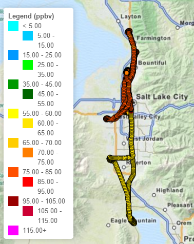

Lake Breeze: Observations
TDWR and MesoWest Wind Observations of a lake breeze in the afternoon of 18 June 2015
A strong lake breeze was observed on 18 June 2015 in the Salt Lake Valley. This map shows winds observations in the afternoon from two methods: a Terminal Doppler Weather Radar (TDWR) and surface weather stations part of the MesoWest network.
- Terrain is shaded in greyscale.
- Blue outline is boundary of Great Salt Lake and Utah Lake.
- Red dot indicates location of the TDWR.
- Color shading is radial velocity with respect to the TDWR.
- Green = winds blowing away from radar
- Orange = winds blowing towards radar
- Radar beam blockage prevents observations of the eastern Salt Lake Valley.
- MesoWest surface stations are marked with wind barbs
- Full barb = 5 m/s
- Half barb = 1 m/s
This map was created using Python Basemap with TDWR data from the NOAA thredds server and surface station data available through the MesoWest API.
Code
Back to Top
Lake Breeze: WRF Simulation

WRF Simulation of Lake Breeze on 18 June 2015
The Weather Research and Forecast (WRF) Model was used to simulate the lake breeze on 18 June 2015. Passive tracers were inserted at various locations to visualize the transport and dispersion of pollutants from different regions.
Cross sections through the valley, shown on the right, are used to visualize the vertical extent of the tracers.
WRF Tracers: North Salt Lake Valley Tracers
WRF Tracers: North and South Salt Lake Valley Tracers
WRF Tracers: Great Salt Lake and Buoy Tracers
These maps were created using Python Basemap. Data was creating using the WRF Version 3.7.
Code
Back to Top
High Ozone Observed in the Lake Breeze
Lake breezes often occur around the Great Salt Lake during sunny, summer afternoons. What makes this particular case interesting, however, is the high levels of ozone measured within the lake breeze air during the Great Salt Lake Summer Ozone Study
The KSL helicopter, equipped with an ozone monitor during the summer, observed high levels of ozone when as it flew from the south end of the valley to the north and through the lake breeze front. Ozone concentrations were about 20 ppb higher in the lake influenced air than the ambient air.
An interactive map of the ozone data measured by the helicopter and other platforms can be found here
Back to Top
For more information about these maps and research contact Brian Blaylock brian.blaylock@utah.edu
or explore the rest of this website.
Back to Top